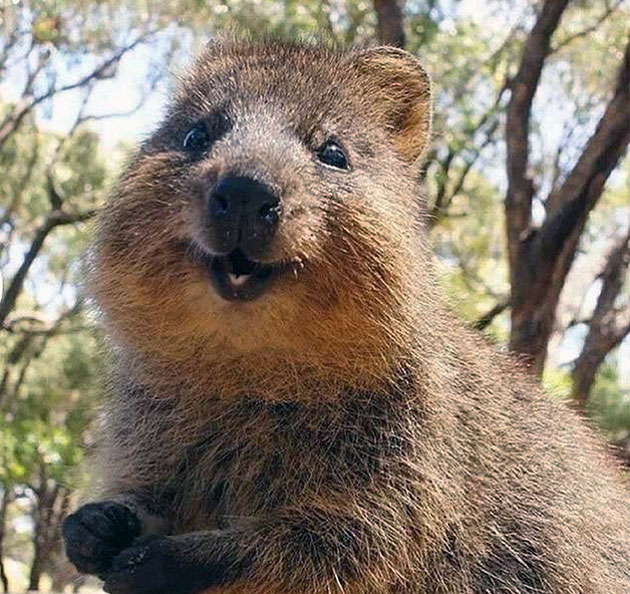

Все о миленькой квокке
Необычная мышка, бурундучок ? Кто эти милые животные ?
Как выглядит квокка
Внешне квокка очень похож на большого грызуна с маленькими передними лапками и 30-сантиметровым хвостиком. Весит он всего 2–5 кг и по размерам похож на небольшую собаку. Правда, в отличие от нее, квокка — травоядный.
